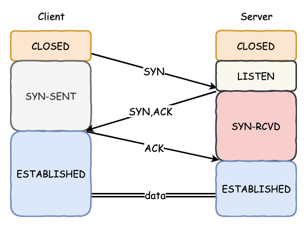
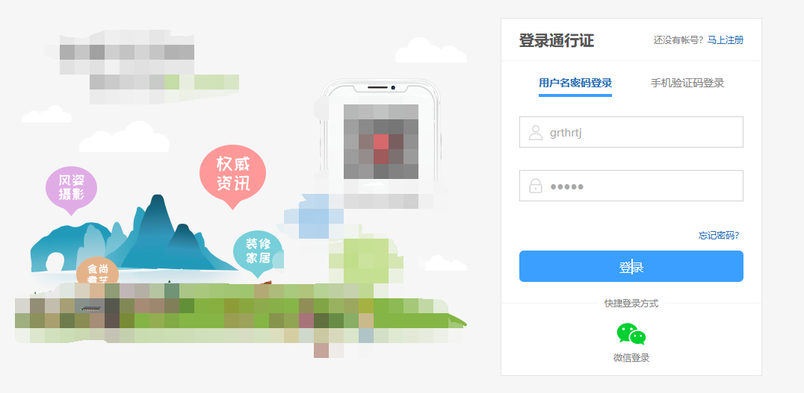
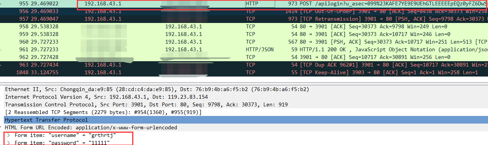
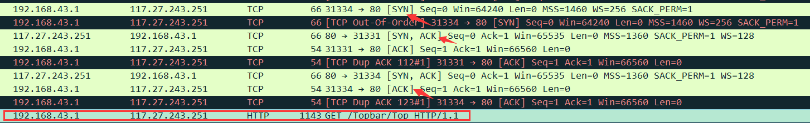
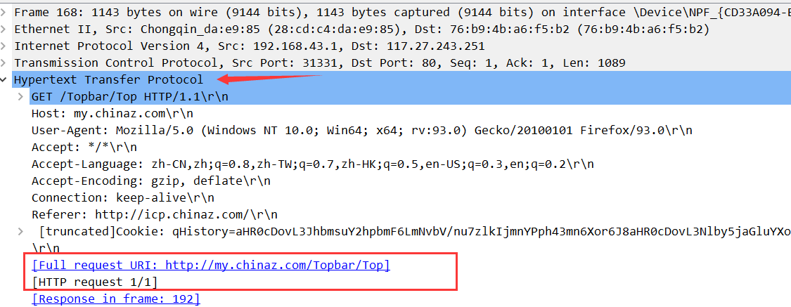
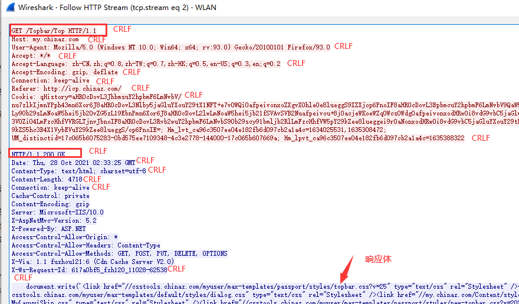
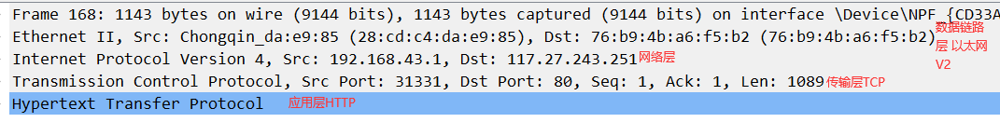
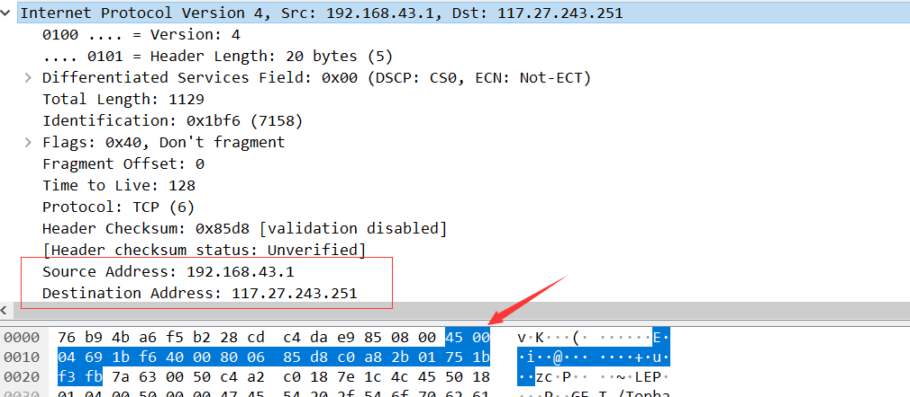

wireshark查看数据包的简单分析
wireshark的工作原理
- 通过底层驱动，拦截网卡上流过的数据。
网络中两台计算机通信的简单过程描述
小明要访问网站时本质上是向对方服务器发送一个HTTP（或HTTPS）请求。在HTTP请求数据包正式被发送出去之前，需要进行TCP连接。也就是我们平时听过的三次握手行为。首先，客户端（小明的计算机）要发送一个SYN请求包给服务器，表示想要与对方建立连接；此时，服务器会回应一个SYN+ACK的响应包，告诉客户端“我已经知道你要和我建立连接啦”；最后需要客户端再返回一个ACK的确认报文给服务器，经过双向确认的TCP连接建立之后，才开始发送HTTP请求的数据包。

通过wireshark捕获数据包进行分析
登录界面—明文传输

- 访问目标网站，进行登录，使用wireshark进行抓包分析登录数据：

- 可以看到在登录界面数据进行了post提交，并且登陆者的用户名和密码都是明文传输的。
三次握手分析
- 当客户端访问一个网站发送HTTP请求时，先要与服务器端建立tcp连接，三次握手结束之后，进入真正的HTTP请求数据包发送。

- 客户端发送一个SYN请求报文给服务器端，SYN是tcp协议头部的一个标志，是建立连接时使用的握手信号；
- 服务器端接收到客户端发过来的SYN请求时，知道了客户端想要与自己建立连接，因此返回一个SYN+ACK报文给客户端作为响应；
- 此时，客户端也需要回应一个ACK确认报文给服务器端，告诉服务器他收到了服务器的确认；
- 经过双方的双向确认之后，连接建立，开始真正的数据传输；
- 客户端正式向服务器端发送HTTP数据包，请求资源的方式为GET。

为什么要进行三次握手而不能是两次呢？
两次握手的形式：客户端向服务器端发送SYN请求，服务器回应一个SYN+ACK确认，然后客户端直接发送HTTP请求，这样听起来也是十分合理的，但是可能会出现下面的情况：
1
2
3
4
5假设客户端发出的第一个连接请求报文段，因为网络延迟，在连接释放以后的某个时间才能到达服务器，
本来这是一个早已失效的连接请求，但服务器收到此失效的请求后，误以为是客户端再次发出的一个新的连接请求，
于是服务器就向客户端发出确认报文段，同意建立连接。
因此，如果不采用三次握手，那么只要服务器发出确认，新的连接就建立了，但是由于现在客户端并没有真正想要连接服务器的意思，因此不会理会服务器的确认，也不会向服务器发送数据，但服务器端会以为建立了新的连接，一直等待对方发送数据，造成资源的浪费。三次握手：客户端没有向服务器的确认发出确认，服务器收不到确认，就知道客户端并没有要求建立连接。
如果第3次握手失败，此时服务器的状态为SYN-RECV。若等不到客户端的ACK，服务器会重新发送SYN+ACK包，如果服务器多次重发SYN+ACK包都等不到客户端的ACK，就会发送RST包，强制关闭连接。
HTTP数据报文的分析
选中HTTP数据右击追踪HTTP流：

红色部分为请求数据包，蓝色部分为服务器端返回来的响应包。
在此仅对报文的格式进行简单总结：
1
2CRLF是回车换行的意思，在请求报文和响应报文每一行的结束都有一个回车换行符，请求和响应报文和实体数据主体之间还有一个回车换行符。
这是报文的规定形式。
wireshark看各层报文—网络层

数据的传输是经过层层封装才能经过光纤、网线等传输出去的。应用层中HTTP报文将数据进行传递，向下传输到传输层进行TCP协议头部封装，再经过网络层IP协议添加源ip和目标ip进行封装，往下添加MAC地址封装成帧后传输。对方接收到帧的信息后再自下而上一层层的拆封得到客户端请求的数据。
在每一层的中能看到与其对应的报文格式和信息，以网络层封装ip地址为例：

ip数据包的首部占20个固定字节，里面有ip地址的版本信息、网络标识（Flags）等，还有就是我们的源ip和目标ip地址，通过wireshark的抓包也能看到。